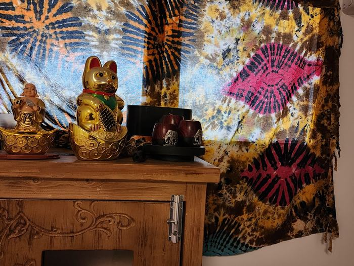
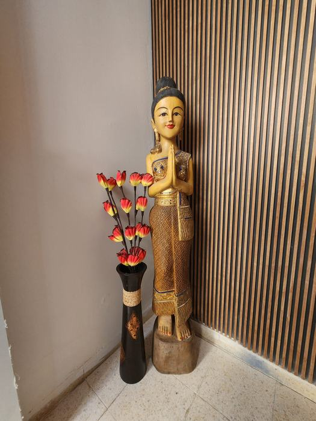
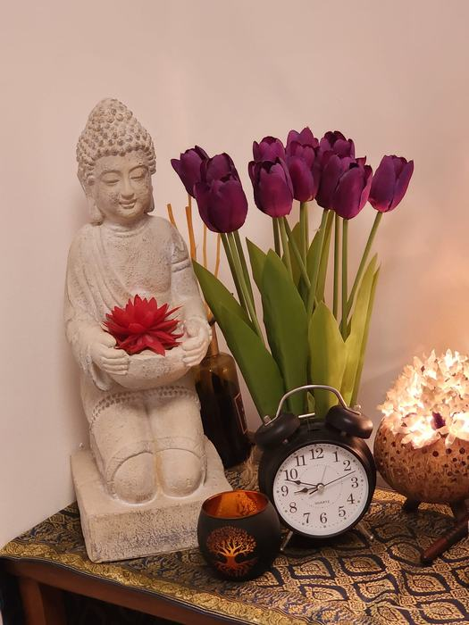
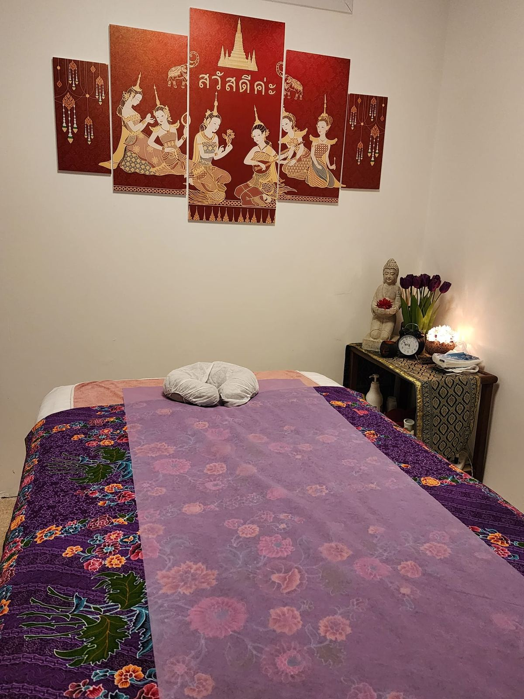
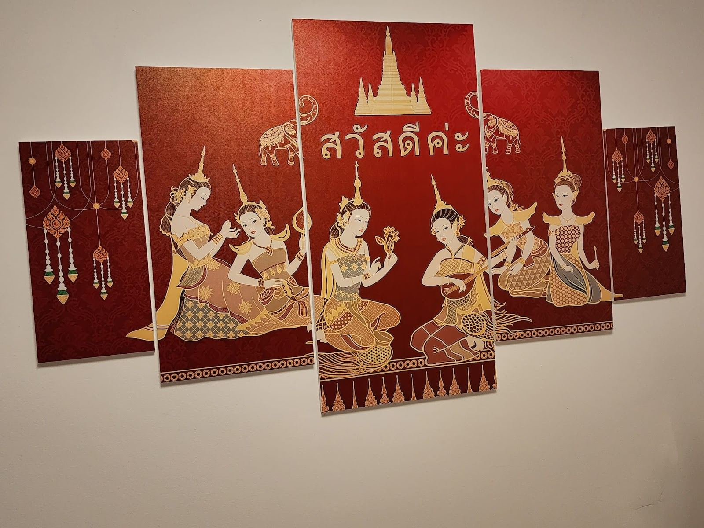
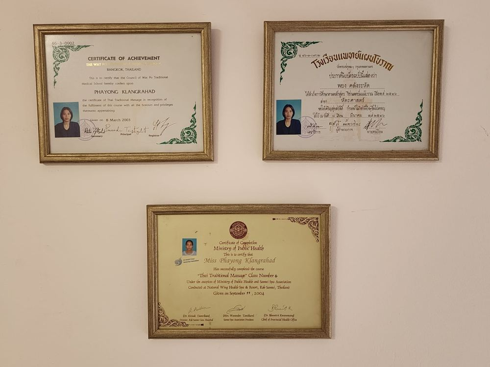

יונג, עיסוי תאילנדיYong, Thai massage
יונג מסאג' תאילנדי חיפה: עיסוי תאילנדי מסורתי בגאולי תימן 10, רמת אשכול.YONG Thai Massage Haifa: traditional Thai massage at 10 Ge’ulei Teiman St, Ramat Eshkol.




חדר אחד, חם ושקט.One room, warm and quiet.
בטיק סגול, ציור אדום-זהוב ובודהה עם לוטוס. ככה נראה החדר בגאולי תימן 10.Purple batik, a red-and-gold painting and a Buddha with a lotus. This is the room at 10 Ge’ulei Teiman St.
טיפולים, מסורת תאילנדית. treatments, a Thai tradition.
כולם מהאתר של יונג. בחרו אחד, ותראו אותו בהודעה למטה.All from Yong’s own site. Pick one and it appears in the message below.
מסמנים, ושולחים ליונג.Tick it, send it to Yong.
כמו בשובר של יונג. ההודעה נכתבת לבד ונשלחת בוואטסאפ.Just like Yong’s own voucher. The message writes itself and goes by WhatsApp.
לעיסוי תאילנדי יש רמות לחץ שונות, אז כדאי לכתוב מראש מה נעים לכם.Thai massage comes in different strengths, so it helps to say up front what you like.

ביקורות בגוגל Google reviews
מגיע ליונג כבר 5 שנים. פשוט מדהימה ומקסימה. טיפול שמחזיר אותי לתאילנד. מס' 1.
I’ve been coming to Yong for 5 years. Simply amazing and lovely. A treatment that takes me back to Thailand. No. 1.
טיפול מקצועי באווירה טובה ובמיקום נוח עם חניה סביב בבניין מקסים…
A professional treatment in a good atmosphere, in a convenient spot with parking around, in a lovely building…
מדהימה יונג. מעסה תאילנדית מסורתית ומקצועית.
Amazing Yong. A traditional, professional Thai masseuse.
פשוט אלופה Number 1
Simply a champion, Number 1

לפני שמגיעים.Before you come.
איך נראה עיסוי תאילנדי?What is a Thai massage like?
שוכבים על מזרן בלבוש קל ונוח, ויונג עובדת בלחיצות ובמתיחות לאורך הגוף.You lie on a mattress in light, comfortable clothes, and Yong works with pressure and stretches along the body.
ואם נעים לי עיסוי רך?What if I like it soft?
לעיסוי תאילנדי יש רמות שונות. כתבו מראש שאתם אוהבים עיסוי מרגיע.Thai massage comes in different strengths. Say up front that you like a relaxing massage.
יש עיסוי לנשים בהריון?Is there a pregnancy massage?
כן. ברשימת הטיפולים של יונג יש עיסוי לנשים בהריון ואחרי לידה.Yes. Yong’s list of treatments includes a massage for pregnancy and after birth.
אפשר לתת כמתנה?Can I give it as a gift?
כן, ליונג יש שובר מתנה. סמנו ״שובר מתנה״ בהודעה למעלה.Yes, Yong has a gift voucher. Tick “A gift voucher” in the message above.
כמה זמן נמשך טיפול?How long is a treatment?
בשובר של יונג מופיעים טיפולים של 60 ושל 90 דקות.Yong’s voucher lists 60- and 90-minute treatments.
איפה חונים?Where do I park?
גאולי תימן 10, רמת אשכול. לקוחות מספרים על חניה מסביב לבניין.10 Ge’ulei Teiman St, Ramat Eshkol. Customers mention parking around the building.
גאולי תימן 10, רמת אשכול.10 Ge’ulei Teiman, Ramat Eshkol.
שעותHours
כתובתAddress
גאולי תימן 10, רמת אשכול, חיפה10 Ge’ulei Teiman St, Ramat Eshkol, Haifa
שובר מתנהGift voucher
עיסוי במתנה, בשובר של יונג.A massage as a present, on Yong’s voucher.